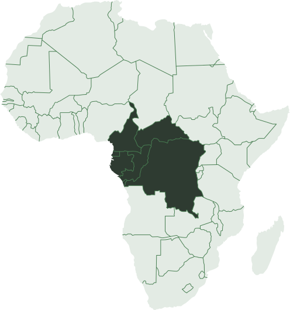
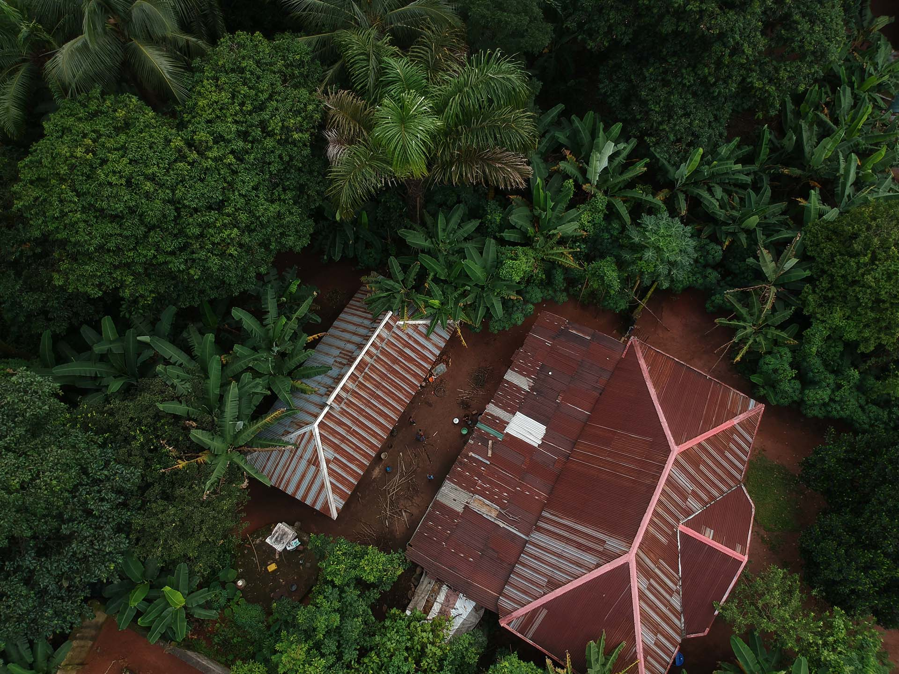
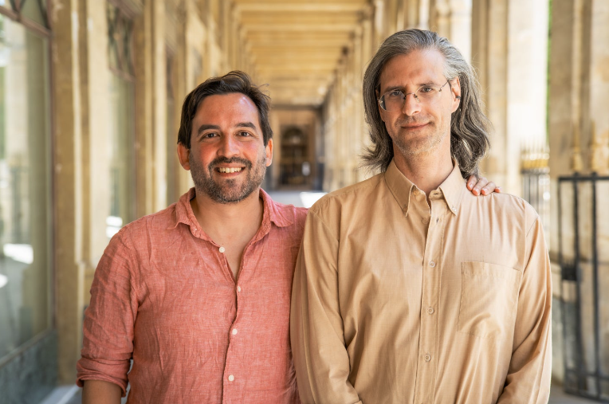

Sauver les forêts
d'Afrique c'est notre métier
Libérer les potentiels de compensation
carbone naturels de l'Afrique
Iroko Analytics développe des projets de compensation carbone et de valorisation de la biodiversité de haute qualité dans la forêt tropicale africaine grâce aux fonds ESG ainsi qu’avec des entreprises engagées vers le zéro émission nette (à travers la Responsabilité Sociétale des Entreprises).
À l'heure actuelle, il est avantageux d'abattre des arbres. Nous modifions les comportements d'utilisation des terres, de sorte qu'il sera plus payant de laisser les arbres debout.
Nous travaillons en priorité avec les communautés locales qui sont en première ligne de la conservation des forêts au Cameroun, en République démocratique du Congo, au Gabon et en République du Congo.
Notre expérience et notre réseau régional sont nourris par notre expertise technologique, permettant à nos clients et investisseurs de suivre indépendamment, et en temps réel, leurs investissements dans la région.

Nos solutions vers le succès
La demande de projets de compensation carbone monte en flèche. Ces projets dans le bassin du Congo « deuxième poumon vert de la planète, plus grande forêt tropicale humide du monde et dernier puit de carbone tropical » sont aujourd'hui presque inexistants. La forêt tropicale et ses habitants n'ont pratiquement pas accès à ce nouveau mécanisme de financement vital.
Pourtant, le potentiel est énorme : 50 milliards de dollars par an suffiraient à compenser toutes les émissions liées à la déforestation, ce qui entraînerait des avantages économiques considérables pour certains des pays les plus pauvres du monde.
Iroko Analytics développe des processus, une technologie et un savoir-faire évolutifs pour devenir la référence et la plateforme majeure pour tous les projets de compensation dans la forêt tropicale africaine, avec l'ambition de compenser 10% des terres forestières du Bassin du Congo d'ici 2030.
Nous développons un système incitatif innovant dans une forêt communautaire au sud-est du Cameroun.
Notre système intelligent mais simple récompensera la communauté locale, ses dirigeants - en particulier les femmes leaders - par des paiements réguliers basés sur la couverture forestière et la conservation de la biodiversité.
Nous faisons équipe avec une ONG, le Service d'Appui aux Initiatives Locales de Développement (SAILD) et d’autres organisations pour identifier des sites pilotes. Le développement du projet débutera au premier trimestre 2023.

Combiner expérience régionale et expertise technique
Nous allions expérience dans le secteur de la conservation du Bassin du Congo et expertise technologique et commerciale, et avons été invités à devenir une société du portefeuille Techstars en 2022.
Grâce à l'imagerie satellite et au machine learning , ainsi qu'à la participation locale, nous développons une plateforme de suivi qui garantira l'intégrité pendant toute la durée de vie du projet. Des résultats empiriquement prouvables garantiront non seulement un impact pour les parties prenantes, mais aussi des paiements réguliers aux communautés locales.

Jules Caron (PDG)
Co-fondateur, PDG, expert du secteur forestier de la RDC, milite contre la déforestation et la perte de biodiversité dans le Bassin du Congo depuis 2012.
Misha Lepetic (CTO)
Co-fondateur, CTO, travaille comme expert en gestion des connaissances depuis 2002 et a créé des plateformes d’intelligence artificielle pour les secteurs privé et public.
Rejoignez-nous
La forêt tropicale d'Afrique est à la croisée des chemins. Alors que les menaces de déforestation et sur le nombre d’espèces fauniques n'ont jamais été aussi importantes, les compensations de carbone et de biodiversité représentent une opportunité sans précédent pour la Forêt Tropicale et ses habitants.
Nous recherchons des clients, des investisseurs et des partenaires pour nous rejoindre dans cette aventure passionnante. Vous aussi, vous pouvez participer à la sauvegarde de la Forêt Tropicale d'Afrique.
Rejoignez-nous